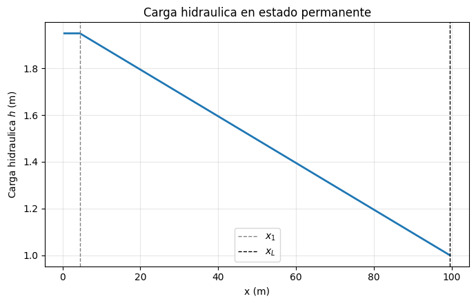
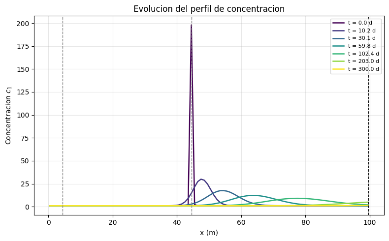
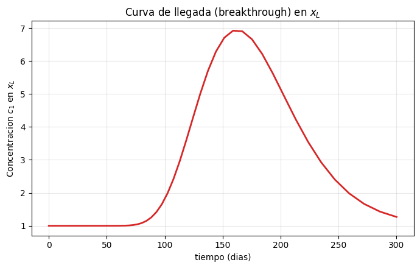

Code
import os
import numpy as np
import matplotlib.pyplot as plt
import flopy
print("Version de FloPy:", flopy.__version__)Version de FloPy: 3.9.3Este notebook desarrolla el problema de flujo de agua subterránea y transporte de una especie química (\(c_1\)) descrito en la figura Flujo_Transporte, lo plantea como un sistema de dos ecuaciones diferenciales parciales (EDP) con sus condiciones iniciales y de frontera, y construye la solución numérica usando MODFLOW 6 (a través de FloPy), acoplando un modelo de flujo (GWF) con un modelo de transporte (GWT).
Contenido
El dominio es una columna 1D de longitud \(L\) (dirección \(x\)), representando un acuífero de espesor y ancho unitarios. Sobre este dominio ocurren dos procesos acoplados:
El acoplamiento es de un solo sentido en este caso: el campo de flujo (carga \(h\) y velocidad \(v\)) controla el transporte, pero el soluto no modifica la densidad ni la viscosidad del agua.
Para un acuífero 1D, confinado, con conductividad hidráulica \(K_x\) y coeficiente de almacenamiento específico \(S_s\), la ecuación de flujo es:
\[ S_s \frac{\partial h}{\partial t} = \frac{\partial}{\partial x} \left( K_x \frac{\partial h}{\partial x} \right) + q_s(x,t) \]
donde \(q_s(x,t)\) representa fuentes o sumideros volumétricos de agua por unidad de volumen (p. ej. un pozo).
Condiciones de frontera (dadas en la figura):
\[ \left.\frac{\partial h}{\partial x}\right|_{(0,t)} = 0 \qquad\text{(frontera cerrada / flujo nulo en } x=0\text{)} \]
\[ h(x_L, t) = 1.0 \qquad\text{(carga fija en el extremo } x=x_L=L\text{)} \]
Condición inicial: no se especifica en la figura; se requiere \(h(x,t_0)\) para poder resolver el problema en régimen transitorio (ver sección 2).
Para la especie \(c_1\), con porosidad \(\theta\), coeficiente de dispersión hidrodinámica \(D_x\), velocidad lineal media \(v_x\) y, en general, retardo \(R\) y decaimiento de primer orden \(\lambda\), la ecuación de advección-dispersión- reacción (ADE) es:
\[ R\,\frac{\partial c_1}{\partial t} = \frac{\partial}{\partial x}\left(D_x \frac{\partial c_1}{\partial x}\right) - v_x \frac{\partial c_1}{\partial x} - \lambda R\, c_1 \]
con \(D_x = \alpha_L |v_x| + D^{*}\) (\(\alpha_L\): dispersividad longitudinal, \(D^{*}\): difusión molecular efectiva) y \(v_x = q_x/\theta\) (velocidad de poro, obtenida del campo de flujo resuelto por la ecuación anterior).
Condiciones de frontera (dadas en la figura):
\[ c_1(x_1, t) = 1.000329 \qquad\text{(concentración fija en } x=x_1\text{)} \]
\[ D_x \left.\frac{\partial c_1}{\partial x}\right|_{(L,t)} = 0 \qquad\text{(flujo dispersivo nulo en la salida } x=x_L\text{)} \]
Esta segunda condición es la clásica condición de “salida libre” o de tercer tipo (Cauchy) usada en el extremo de aguas abajo de una columna de transporte: el soluto sólo sale del dominio por advección, sin gradiente dispersivo impuesto.
Condición inicial (dada en la figura):
\[ c_1(x,t_0) = 1.000329 \quad \forall\, x \neq x_{12} \qquad\qquad c_1(x_{12}, t_0) = 200.0 \]
Es decir, en el instante inicial la concentración es igual a un valor de fondo (\(1.000329\)) en todo el dominio, excepto en el punto \(x_{12}\), donde existe un valor puntual muy alto (200.0) que representa una masa de soluto ya presente en el medio (p. ej. un derrame o inyección previa) que a partir de \(t_0\) comenzará a migrar y dispersarse bajo la acción del flujo.
La figura define correctamente las condiciones de frontera de \(h\) y \(c_1\) y la condición inicial de \(c_1\), pero dejan sin especificar varios elementos indispensables para resolver numéricamente el problema. Se listan a continuación, junto con el valor asumido y la razón por la cual es necesario:
| Dato faltante | Símbolo | Valor asumido | ¿Por qué es necesario? |
|---|---|---|---|
| Longitud del dominio y ubicación de \(x_1\), \(x_{12}\), \(x_L\) | \(L, x_1, x_{12}, x_L\) | \(L=100\) m; \(x_1=4.5\) m; \(x_{12}=44.5\) m; \(x_L=99.5\) m | Sin coordenadas concretas no puede discretizarse la malla ni ubicar las condiciones de frontera/iniciales. |
| Conductividad hidráulica | \(K_x\) | 10 m/d | Parámetro obligatorio de la ecuación de flujo; controla la magnitud del gradiente de carga necesario para un caudal dado. |
| Fuente de flujo real | \(Q_{iny}\) (pozo en \(x_1\)) | 0.1 m³/d | Crítico: las condiciones dadas (frontera cerrada en \(x=0\) y carga fija únicamente en \(x_L\)) no generan por sí solas ningún flujo, ya que no existe diferencia de carga que lo impulse. Sin una fuente/sumidero interno el sistema permanecería estático (\(h(x,t)=1.0\) en todo punto) y el transporte advectivo sería nulo. Se añade un pozo de inyección en \(x_1\) —coherente con el hecho de que ahí se especifica la concentración de entrada \(c_1(x_1,t)=1.000329\)— que representa el agua que ingresa al sistema y empuja el soluto hacia \(x_L\). |
| Porosidad efectiva | \(\theta\) | 0.30 | Necesaria para convertir el flujo específico (Ley de Darcy) en velocidad lineal de poro \(v_x=q_x/\theta\), que es la que transporta el soluto. |
| Dispersividad longitudinal | \(\alpha_L\) | 1.0 m | Define la magnitud de la dispersión hidrodinámica \(D_x\); sin ella la pluma nunca se ensancharía y el transporte sería puramente advectivo (pistón). |
| Difusión molecular efectiva | \(D^{*}\) | 0 (despreciable) | Se asume nula porque en medios porosos con velocidades advectivas moderadas su aporte es despreciable frente a la dispersión mecánica. |
| Coeficiente de almacenamiento / discretización temporal | — | Flujo en régimen permanente (sin paquete STO); transporte transitorio en 300 días, 150 pasos | Las condiciones de frontera de \(h\) no dependen del tiempo, por lo que basta con resolver el flujo en estado estacionario; el transporte sí es transitorio porque la pluma evoluciona en el tiempo a partir de la condición inicial. |
| Retardo y decaimiento | \(R, \lambda\) | \(R=1\), \(\lambda=0\) | Se asume un soluto conservativo (tipo trazador), ya que la figura no menciona reacciones ni sorción. |
| Geometría de la sección transversal | espesor, ancho | 1 m × 1 m | Necesaria para relacionar caudales volumétricos con velocidades de Darcy. |
Con esta información el problema queda completamente definido y puede resolverse numéricamente.
MODFLOW 6 resuelve este tipo de problemas acoplando dos modelos dentro de una misma simulación:
GWF6-GWT6.Los paquetes de MODFLOW 6 usados y su correspondencia con el planteamiento matemático son:
| Elemento del problema | Paquete MODFLOW 6 |
|---|---|
| Malla / discretización espacial | DIS (en ambos modelos) |
| \(K_x\) | NPF (GWF) |
| \(\partial h/\partial x(0,t)=0\) | Ninguno (frontera sin condición ⇒ flujo nulo por defecto) |
| \(h(x_L,t)=1.0\) | CHD (GWF) |
| Fuente de flujo en \(x_1\) | WEL (GWF) |
| \(\theta\), transporte de masa | MST (GWT) |
| Advección | ADV (GWT, esquema TVD) |
| \(\alpha_L\), \(D_x\) | DSP (GWT) |
| \(c_1(x_1,t)=1.000329\) | CNC — concentración fija (GWT) |
| \(D_x\,\partial c_1/\partial x(L,t)=0\) | Ninguno (condición natural de MODFLOW 6 en la celda de salida) |
| \(c_1(x,t_0)\) | IC (GWT) |
| Acople flujo-transporte | GWFGWT (exchange) |
A continuación se construye, ejecuta y post-procesa el modelo.
Version de FloPy: 3.9.3Se requiere el ejecutable mf6. Si no está disponible, FloPy puede descargarlo automáticamente con flopy.utils.get_modflow. Ajuste exe_mf6 a la ruta donde tenga (o desee instalar) el ejecutable.
ws = "./model_ws" # carpeta de trabajo del modelo
exe_mf6 = r"C:\Users\luiggi\Documents\GitSites\RTWMA\bin\windows\mf6.exe" # ruta al ejecutable de MODFLOW 6
sim_name = "flujtrans"
os.makedirs(ws, exist_ok=True)
# Si no cuenta con el ejecutable de MODFLOW 6, descomente las siguientes
# líneas para que FloPy lo descargue automáticamente desde el repositorio
# oficial de USGS/MODFLOW-ORG:
#
# os.makedirs("./bin", exist_ok=True)
# flopy.utils.get_modflow("./bin")
# exe_mf6 = "./bin/mf6"
assert os.path.isfile(exe_mf6), (
f"No se encontro el ejecutable {exe_mf6}. "
"Descargue MODFLOW 6 (vea el comentario de arriba) o ajuste la ruta."
)nlay, nrow, ncol = 1, 1, 100
delr = 1.0 # m, tamano de celda en x
delc = 1.0 # m, ancho unitario (seccion 1D)
top = 1.0 # m
botm = 0.0 # m (espesor saturado = 1 m)
L = ncol * delr # longitud total del dominio
icol_x1 = 4 # celda de entrada / concentracion fija c1(x1,t)
icol_x12 = 44 # celda del pulso inicial de concentracion
icol_xL = ncol - 1 # celda del extremo derecho (carga fija, salida)
x1 = (icol_x1 + 0.5) * delr
x12 = (icol_x12 + 0.5) * delr
xL = (icol_xL + 0.5) * delr
print(f"L = {L} m")
print(f"x1 = {x1} m (columna/celda de concentracion fija)")
print(f"x12 = {x12} m (columna/celda del pulso inicial)")
print(f"xL = {xL} m (columna/celda de carga fija / salida)")L = 100.0 m
x1 = 4.5 m (columna/celda de concentracion fija)
x12 = 44.5 m (columna/celda del pulso inicial)
xL = 99.5 m (columna/celda de carga fija / salida)K = 10.0 # m/d, conductividad hidraulica
porosity = 0.30 # -, porosidad efectiva
alphaL = 1.0 # m, dispersividad longitudinal
alphaTH = 0.1 # m, dispersividad transversal horizontal (irrelevante en 1D)
alphaTV = 0.1 # m, dispersividad transversal vertical (irrelevante en 1D)
diffc = 0.0 # m2/d, difusion molecular (despreciada)
Q_iny = 0.1 # m3/d, caudal de inyeccion en x1 (necesario para generar flujo)
h_L = 1.0 # m, carga fija en x_L (dato del enunciado)
c_bg = 1.000329 # concentracion de fondo / agua inyectada (dato del enunciado)
c_spike = 200.0 # concentracion inicial puntual en x12 (dato del enunciado)
# Discretizacion temporal del transporte
perlen = 300.0 # dias, duracion total de la simulacion
nstp = 150 # numero de pasos de tiempo
tsmult = 1.05 # multiplicador del paso de tiempoTDIS)NPF: conductividad hidráulica \(K_x\).STO ⇒ el flujo se resuelve en régimen permanente, congruente con que las condiciones de frontera de \(h\) no dependen del tiempo.WEL: pozo de inyección en \(x_1\) (fuente de flujo necesaria, ver sección 2).CHD: carga fija \(h(x_L,t)=1.0\).gwfname = "gwf_" + sim_name
gwf = flopy.mf6.ModflowGwf(sim, modelname=gwfname, save_flows=True)
ims_gwf = flopy.mf6.ModflowIms(
sim,
filename=f"{gwfname}.ims",
complexity="SIMPLE",
outer_dvclose=1e-6,
inner_dvclose=1e-6,
)
sim.register_ims_package(ims_gwf, [gwf.name])
dis = flopy.mf6.ModflowGwfdis(
gwf,
nlay=nlay, nrow=nrow, ncol=ncol,
delr=delr, delc=delc, top=top, botm=botm,
)
npf = flopy.mf6.ModflowGwfnpf(
gwf, icelltype=0, k=K, save_specific_discharge=True
)
ic = flopy.mf6.ModflowGwfic(gwf, strt=h_L)
# Pozo de inyeccion en x1 (con concentracion auxiliar para el acople con GWT)
wel = flopy.mf6.ModflowGwfwel(
gwf,
stress_period_data={0: [[(0, 0, icol_x1), Q_iny, c_bg]]},
auxiliary=["CONCENTRATION"],
pname="WEL-1",
)
# Carga fija en x_L: h(x_L,t) = 1.0
chd = flopy.mf6.ModflowGwfchd(
gwf,
stress_period_data={0: [[(0, 0, icol_xL), h_L]]},
pname="CHD-1",
)
oc_gwf = flopy.mf6.ModflowGwfoc(
gwf,
head_filerecord=f"{gwfname}.hds",
budget_filerecord=f"{gwfname}.cbc",
saverecord=[("HEAD", "ALL"), ("BUDGET", "ALL")],
)IC: condición inicial \(c_1(x,t_0)\) — valor de fondo en todo el dominio y el pulso puntual en \(x_{12}\).ADV (esquema TVD) y DSP (\(\alpha_L\)): advección y dispersión.MST: porosidad \(\theta\) (almacenamiento de masa disuelta).CNC: condición de frontera de concentración fija en \(x_1\) (\(c_1(x_1,t)=1.000329\)).CNC: MODFLOW 6 aplica de forma natural un gradiente dispersivo nulo en la celda de salida (CHD), es decir \(D_x\,\partial c_1/\partial x(L,t)=0\) se cumple automáticamente.SSM: vincula la concentración auxiliar del pozo WEL-1 con el transporte (requerido por MODFLOW 6 cuando el modelo de flujo tiene paquetes de frontera).gwtname = "gwt_" + sim_name
gwt = flopy.mf6.ModflowGwt(sim, modelname=gwtname, save_flows=True)
ims_gwt = flopy.mf6.ModflowIms(
sim,
filename=f"{gwtname}.ims",
complexity="SIMPLE",
linear_acceleration="BICGSTAB", # requerido: la matriz de GWT es asimetrica
outer_dvclose=1e-8,
inner_dvclose=1e-8,
)
sim.register_ims_package(ims_gwt, [gwt.name])
dis_t = flopy.mf6.ModflowGwtdis(
gwt,
nlay=nlay, nrow=nrow, ncol=ncol,
delr=delr, delc=delc, top=top, botm=botm,
)
# Condicion inicial: c1(x,t0) = 1.000329 en todo el dominio,
# excepto en x12 donde c1(x12,t0) = 200.0
c_ini = np.full((nlay, nrow, ncol), c_bg)
c_ini[0, 0, icol_x12] = c_spike
ic_t = flopy.mf6.ModflowGwtic(gwt, strt=c_ini)
adv = flopy.mf6.ModflowGwtadv(gwt, scheme="TVD")
dsp = flopy.mf6.ModflowGwtdsp(
gwt, xt3d_off=True,
alh=alphaL, ath1=alphaTH, ath2=alphaTV, diffc=diffc,
)
mst = flopy.mf6.ModflowGwtmst(gwt, porosity=porosity)
# Frontera de concentracion fija (Dirichlet) en x1: c1(x1,t) = 1.000329
cnc = flopy.mf6.ModflowGwtcnc(
gwt,
stress_period_data={0: [[(0, 0, icol_x1), c_bg]]},
pname="CNC-1",
)
ssm = flopy.mf6.ModflowGwtssm(
gwt, sources=[["WEL-1", "AUX", "CONCENTRATION"]]
)
oc_gwt = flopy.mf6.ModflowGwtoc(
gwt,
concentration_filerecord=f"{gwtname}.ucn",
budget_filerecord=f"{gwtname}.cbc",
saverecord=[("CONCENTRATION", "ALL"), ("BUDGET", "ALL")],
)GWF6-GWT6)writing simulation...
writing simulation name file...
writing simulation tdis package...
writing solution package ims_-1...
writing solution package ims_0...
writing package flujtrans.gwfgwt...
writing model gwf_flujtrans...
writing model name file...
writing package dis...
writing package npf...
writing package ic...
writing package wel-1...
INFORMATION: maxbound in ('gwf6', 'wel', 'dimensions') changed to 1 based on size of stress_period_data
writing package chd-1...
INFORMATION: maxbound in ('gwf6', 'chd', 'dimensions') changed to 1 based on size of stress_period_data
writing package oc...
writing model gwt_flujtrans...
writing model name file...
writing package dis...
writing package ic...
writing package adv...
writing package dsp...
writing package mst...
writing package cnc-1...
INFORMATION: maxbound in ('gwt6', 'cnc', 'dimensions') changed to 1 based on size of stress_period_data
writing package ssm...
writing package oc...
FloPy is using the following executable to run the model: ..\..\..\..\bin\windows\mf6.exe
MODFLOW 6
U.S. GEOLOGICAL SURVEY MODULAR HYDROLOGIC MODEL
VERSION 6.6.1 02/10/2025
MODFLOW 6 compiled Feb 10 2025 17:37:25 with Intel(R) Fortran Intel(R) 64
Compiler Classic for applications running on Intel(R) 64, Version 2021.7.0
Build 20220726_000000
This software has been approved for release by the U.S. Geological
Survey (USGS). Although the software has been subjected to rigorous
review, the USGS reserves the right to update the software as needed
pursuant to further analysis and review. No warranty, expressed or
implied, is made by the USGS or the U.S. Government as to the
functionality of the software and related material nor shall the
fact of release constitute any such warranty. Furthermore, the
software is released on condition that neither the USGS nor the U.S.
Government shall be held liable for any damages resulting from its
authorized or unauthorized use. Also refer to the USGS Water
Resources Software User Rights Notice for complete use, copyright,
and distribution information.
MODFLOW runs in SEQUENTIAL mode
Run start date and time (yyyy/mm/dd hh:mm:ss): 2026/07/11 14:12:51
Writing simulation list file: mfsim.lst
Using Simulation name file: mfsim.nam
Solving: Stress period: 1 Time step: 1
Solving: Stress period: 1 Time step: 2
Solving: Stress period: 1 Time step: 3
Solving: Stress period: 1 Time step: 4
Solving: Stress period: 1 Time step: 5
Solving: Stress period: 1 Time step: 6
Solving: Stress period: 1 Time step: 7
Solving: Stress period: 1 Time step: 8
Solving: Stress period: 1 Time step: 9
Solving: Stress period: 1 Time step: 10
Solving: Stress period: 1 Time step: 11
Solving: Stress period: 1 Time step: 12
Solving: Stress period: 1 Time step: 13
Solving: Stress period: 1 Time step: 14
Solving: Stress period: 1 Time step: 15
Solving: Stress period: 1 Time step: 16
Solving: Stress period: 1 Time step: 17
Solving: Stress period: 1 Time step: 18
Solving: Stress period: 1 Time step: 19
Solving: Stress period: 1 Time step: 20
Solving: Stress period: 1 Time step: 21
Solving: Stress period: 1 Time step: 22
Solving: Stress period: 1 Time step: 23
Solving: Stress period: 1 Time step: 24
Solving: Stress period: 1 Time step: 25
Solving: Stress period: 1 Time step: 26
Solving: Stress period: 1 Time step: 27
Solving: Stress period: 1 Time step: 28
Solving: Stress period: 1 Time step: 29
Solving: Stress period: 1 Time step: 30
Solving: Stress period: 1 Time step: 31
Solving: Stress period: 1 Time step: 32
Solving: Stress period: 1 Time step: 33
Solving: Stress period: 1 Time step: 34
Solving: Stress period: 1 Time step: 35
Solving: Stress period: 1 Time step: 36
Solving: Stress period: 1 Time step: 37
Solving: Stress period: 1 Time step: 38
Solving: Stress period: 1 Time step: 39
Solving: Stress period: 1 Time step: 40
Solving: Stress period: 1 Time step: 41
Solving: Stress period: 1 Time step: 42
Solving: Stress period: 1 Time step: 43
Solving: Stress period: 1 Time step: 44
Solving: Stress period: 1 Time step: 45
Solving: Stress period: 1 Time step: 46
Solving: Stress period: 1 Time step: 47
Solving: Stress period: 1 Time step: 48
Solving: Stress period: 1 Time step: 49
Solving: Stress period: 1 Time step: 50
Solving: Stress period: 1 Time step: 51
Solving: Stress period: 1 Time step: 52
Solving: Stress period: 1 Time step: 53
Solving: Stress period: 1 Time step: 54
Solving: Stress period: 1 Time step: 55
Solving: Stress period: 1 Time step: 56
Solving: Stress period: 1 Time step: 57
Solving: Stress period: 1 Time step: 58
Solving: Stress period: 1 Time step: 59
Solving: Stress period: 1 Time step: 60
Solving: Stress period: 1 Time step: 61
Solving: Stress period: 1 Time step: 62
Solving: Stress period: 1 Time step: 63
Solving: Stress period: 1 Time step: 64
Solving: Stress period: 1 Time step: 65
Solving: Stress period: 1 Time step: 66
Solving: Stress period: 1 Time step: 67
Solving: Stress period: 1 Time step: 68
Solving: Stress period: 1 Time step: 69
Solving: Stress period: 1 Time step: 70
Solving: Stress period: 1 Time step: 71
Solving: Stress period: 1 Time step: 72
Solving: Stress period: 1 Time step: 73
Solving: Stress period: 1 Time step: 74
Solving: Stress period: 1 Time step: 75
Solving: Stress period: 1 Time step: 76
Solving: Stress period: 1 Time step: 77
Solving: Stress period: 1 Time step: 78
Solving: Stress period: 1 Time step: 79
Solving: Stress period: 1 Time step: 80
Solving: Stress period: 1 Time step: 81
Solving: Stress period: 1 Time step: 82
Solving: Stress period: 1 Time step: 83
Solving: Stress period: 1 Time step: 84
Solving: Stress period: 1 Time step: 85
Solving: Stress period: 1 Time step: 86
Solving: Stress period: 1 Time step: 87
Solving: Stress period: 1 Time step: 88
Solving: Stress period: 1 Time step: 89
Solving: Stress period: 1 Time step: 90
Solving: Stress period: 1 Time step: 91
Solving: Stress period: 1 Time step: 92
Solving: Stress period: 1 Time step: 93
Solving: Stress period: 1 Time step: 94
Solving: Stress period: 1 Time step: 95
Solving: Stress period: 1 Time step: 96
Solving: Stress period: 1 Time step: 97
Solving: Stress period: 1 Time step: 98
Solving: Stress period: 1 Time step: 99
Solving: Stress period: 1 Time step: 100
Solving: Stress period: 1 Time step: 101
Solving: Stress period: 1 Time step: 102
Solving: Stress period: 1 Time step: 103
Solving: Stress period: 1 Time step: 104
Solving: Stress period: 1 Time step: 105
Solving: Stress period: 1 Time step: 106
Solving: Stress period: 1 Time step: 107
Solving: Stress period: 1 Time step: 108
Solving: Stress period: 1 Time step: 109
Solving: Stress period: 1 Time step: 110
Solving: Stress period: 1 Time step: 111
Solving: Stress period: 1 Time step: 112
Solving: Stress period: 1 Time step: 113
Solving: Stress period: 1 Time step: 114
Solving: Stress period: 1 Time step: 115
Solving: Stress period: 1 Time step: 116
Solving: Stress period: 1 Time step: 117
Solving: Stress period: 1 Time step: 118
Solving: Stress period: 1 Time step: 119
Solving: Stress period: 1 Time step: 120
Solving: Stress period: 1 Time step: 121
Solving: Stress period: 1 Time step: 122
Solving: Stress period: 1 Time step: 123
Solving: Stress period: 1 Time step: 124
Solving: Stress period: 1 Time step: 125
Solving: Stress period: 1 Time step: 126
Solving: Stress period: 1 Time step: 127
Solving: Stress period: 1 Time step: 128
Solving: Stress period: 1 Time step: 129
Solving: Stress period: 1 Time step: 130
Solving: Stress period: 1 Time step: 131
Solving: Stress period: 1 Time step: 132
Solving: Stress period: 1 Time step: 133
Solving: Stress period: 1 Time step: 134
Solving: Stress period: 1 Time step: 135
Solving: Stress period: 1 Time step: 136
Solving: Stress period: 1 Time step: 137
Solving: Stress period: 1 Time step: 138
Solving: Stress period: 1 Time step: 139
Solving: Stress period: 1 Time step: 140
Solving: Stress period: 1 Time step: 141
Solving: Stress period: 1 Time step: 142
Solving: Stress period: 1 Time step: 143
Solving: Stress period: 1 Time step: 144
Solving: Stress period: 1 Time step: 145
Solving: Stress period: 1 Time step: 146
Solving: Stress period: 1 Time step: 147
Solving: Stress period: 1 Time step: 148
Solving: Stress period: 1 Time step: 149
Solving: Stress period: 1 Time step: 150
Run end date and time (yyyy/mm/dd hh:mm:ss): 2026/07/11 14:12:51
Elapsed run time: 0.384 Seconds
Normal termination of simulation.
Exito de la corrida: TrueCarga hidraulica: min = 1.0 max = 1.949999999999998 m
Numero de tiempos de salida de concentracion: 150Al no existir otra fuente de flujo distinta del pozo de inyección en \(x_1\) y de la carga fija en \(x_L\), la carga crece monótonamente desde \(x_1\) hacia \(x=0\) (zona sin salida, por la condición de flujo nulo) y decrece desde \(x_1\) hacia \(x_L\), generando el gradiente que empuja el agua —y el soluto— hacia la salida.
fig, ax = plt.subplots(figsize=(7, 4.5))
ax.plot(x, head, lw=2, color="#1f77b4")
ax.axvline(x1, color="gray", ls="--", lw=1, label="$x_1$")
ax.axvline(xL, color="black", ls="--", lw=1, label="$x_L$")
ax.set_xlabel("x (m)")
ax.set_ylabel("Carga hidraulica $h$ (m)")
ax.set_title("Carga hidraulica en estado permanente")
ax.legend()
ax.grid(alpha=0.3)
plt.tight_layout()
plt.show()
Se observa cómo la condición inicial puntual en \(x_{12}\) (pico de 200) se dispersa y se traslada por advección hacia \(x_L\), mientras que desde \(x_1\) avanza el frente de agua “limpia” (\(c_1=1.000329\)) inyectada por el pozo.
sel_times = [times[0], 10, 30, 60, 100, 200, 300]
sel_times = sorted(set(times[np.argmin(np.abs(times - t))] for t in sel_times))
fig, ax = plt.subplots(figsize=(8, 5))
cmap = plt.cm.viridis(np.linspace(0, 1, len(sel_times)))
for t, col in zip(sel_times, cmap):
c = ucn.get_data(totim=t)[0, 0, :]
ax.plot(x, c, color=col, lw=1.8, label=f"t = {t:.1f} d")
ax.axvline(x1, color="gray", ls="--", lw=1)
ax.axvline(x12, color="gray", ls="--", lw=1)
ax.axvline(xL, color="black", ls="--", lw=1)
ax.set_xlabel("x (m)")
ax.set_ylabel("Concentracion $c_1$")
ax.set_title("Evolucion del perfil de concentracion")
ax.legend(fontsize=8)
ax.grid(alpha=0.3)
plt.tight_layout()
plt.show()
Muestra cómo cambia con el tiempo la concentración justo en la celda de salida (\(x_L\)), donde se aplica la condición de flujo dispersivo nulo.
icol_xL_ = ncol - 1
c_xL = np.array([ucn.get_data(totim=t)[0, 0, icol_xL_] for t in times])
fig, ax = plt.subplots(figsize=(7, 4.5))
ax.plot(times, c_xL, lw=2, color="#d62728")
ax.set_xlabel("tiempo (dias)")
ax.set_ylabel("Concentracion $c_1$ en $x_L$")
ax.set_title("Curva de llegada (breakthrough) en $x_L$")
ax.grid(alpha=0.3)
plt.tight_layout()
plt.show()
GWF) en régimen permanente con un modelo de transporte (GWT) transitorio, usando FloPy para la construcción, ejecución y post-proceso.Este mismo flujo de trabajo (definición de EDPs → identificación de datos faltantes → construcción del modelo por paquetes → ejecución → post-proceso) es directamente extensible a dominios 2D/3D, múltiples especies químicas, reacciones o condiciones transitorias más complejas.